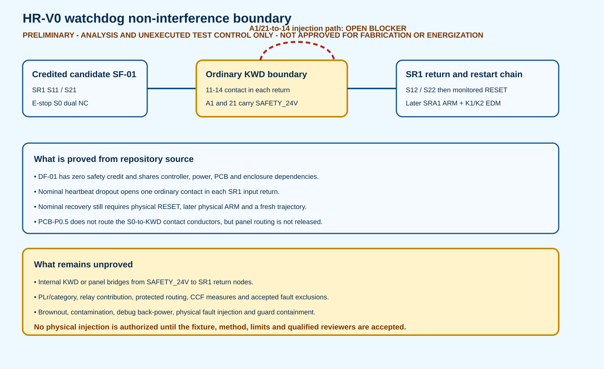

PRELIMINARY - ANALYSIS AND UNEXECUTED TEST CONTROL ONLY - NOT APPROVED FOR FABRICATION OR ENERGIZATION
Watchdog dependent-failure review
Electrical V3-P1.12 / PCB-P0.5 / HR-V0-CP-P0.4
This guide maps the ordinary heartbeat diagnostic onto the exact V3 terminals and exposes faults that could negatively affect candidate safety functions. It assigns no PL/SIL and authorizes no test.
Blocking topology question
Nominal sequence
- S0 channels and KWD 11-14 contacts complete SR1 input returns.
- SR1 requires monitored physical RESET.
- SR1 outputs enable SRA1 input eligibility.
- SRA1 requires a distinct physical ARM through K1/K2 mirror-contact EDM.
- A fresh validated trajectory is still required by control logic.
What the package controls
- Exact paths:
exact-path-register.csv - Failure modes:
failure-mode-register.csv - Common causes:
common-cause-group-register.csv - Unexecuted cases:
fault-injection-matrix.csv - Separation controls:
separation-control-register.csv - Open decisions:
open-decision-register.csv
Zero-credit boundary
WDCTRL1, firmware, both drivers, both KWD relays and UFB1 feedback remain ordinary controls. Their nominal dropout is useful, but the risk assessment assumes that dropout can fail. The guard and hard stops must contain that assumed failure unless a separately allocated safety function is selected.
Physical execution boundary
All 28 cases are NOT EXECUTED and NOT AUTHORIZED. Actuator power must remain physically absent for the later E2 logic subset. Internal-equivalent injection, brownout and bridge tests need an accepted fixture, calibrated instrumentation, numerical limits, two-person control and qualified electrical/functional-safety approval.

DF-01 SAFETY CREDIT: ZERO. SF-01/SF-03 ALLOCATION: SELECTION REQUIRED.